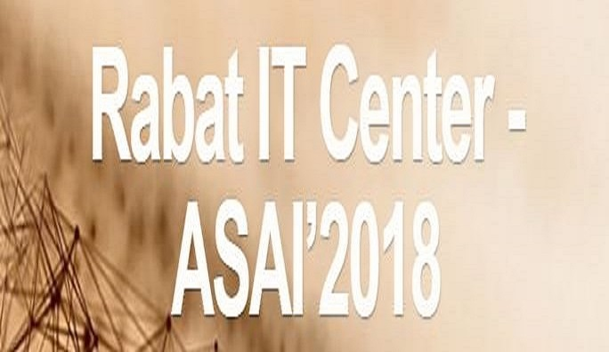

About
Artificial Intelligence (AI) is a challenge for the future. It surrounds us, through its chatbots, or its recommendation systems based on a detailed knowledge of the individuals, groups or networks’ behaviors. AI recent growth is due to major advances in access to massive data, in computing power developed at reduced cost, and in data processing algorithms.
Accordingly, AISI’2018, organised by Rabat-IT-Center, sets the objective of providing participants with a solid background in AI, reinforced by multiple examples and feedback. This first edition focuses particularly on developments in algorithms, and the powerful technological possibilities that they bring out such as Machine Learning and Deep Learning.
Rabat Information Technology Center of Mohammed V University in Rabat:www.rabat-it-center.org
- Director: Pr. Bouchaïb Bounabat. Full Professor, ENSIAS.
- Research Center and Regional hub for technological innovation: 3 Laboratories; 8 research teams; 110 professors (permanents searchers) and more than 400 PhD students from 9 academic establishments.
- Strategic Vision Rabat IT Center as a Platform for Excellence in IT R&D and Innovation.
Location
ENSIAS, Avenue Mohamed Ben Abdellah Regragui. Rabat, morocco
Speakers
-

Introductory Welecome Speeches
-
Machine Learning from Theory to Algorithms
Pr. Abdelatif ELAFIA
Smart Systems LaboratoryFull Professor at National School of Computer Science and Systems Analysis (ENSIAS), Mohamed V University in Rabat. He received his M.Sc. degrees in Applied Mathematics in 1993 and Ph.D. in Operation Research in 1999 from Sherbrook University, Canada. His Research areas of interest are Mathematical Programming (Stochastic and deterministic), Machine learning, tuning of metaheuristics, specifically learning performance, and optimization algorithms and their application in many fields such as : supply chain, forecasting , recommendation systems.
-
Artificial Neuronal Networks. Application to Reticulate Structures Optimization
Pr. Raddouane CHIHEB
Information Retrieval and Data Analytics Team, Advanced Digital Entreprise Modeling and Information Retrieval Lab.Professor of Applied mathematics at the National School of Computer Science and Systems Analysis at Mohammed V University, Morrocco. He obtained his Master from the National Institute of Applied Sciences of Lyon and PhD from the Jean Monnet University of Saint-Etienne. His research interests are in the area of Semantic Analysis, Structural Optimization, Education, Optimization of the logistics chain, and Value Analysis. He supervised over 8 students. Prof. Raddouane Chiheb is President of the Moroccan Association for the Value Analysis.
-
Deep Learning: Architectures et applications
Pr. Aissam BERRAHOU
Smart Systems LaboratoryReceived the M.Sc. degrees and Ph.D in computer science from the Mohammed V University, Mohammadia School Of Engineering, Rabat, Morocco in 2008 and 2015 respectively. He is now an assistant professor in National School of Computer Science And Systems Analysis, Mohammed V University. His research interest includes embedded systems, optimization, Deep/machine learning and computer vision.
-
Tensorflow Tutorial: Image Recognition – Case Study
Pr. Azeddine ELHASSOUNY
Information Retrieval and Data Analytics Team, Advanced Digital Entreprise Modeling and Information Retrieval Lab.Professor at ENSIAS, IT College, Mohammed V University in Rabat, Morocco. He teaches Deep learning in computer vision, multimedia indexing and retrieval(CBIR), data visualization, data science, R language, C language, data structures and algorithms. His current research interests include deep learning in computer vision, multimedia signal processing, and pattern recognition and classification. His research also explores the connections between these areas and mathematical fields, such as neutrosophic field theory, fusion theory, and multiple criteria decision making (MCDM). He has published a book and several research papers about cognitive computing. Dr. Elhassouny holds a Postdoc at UNM, a Ph.D. and M.S. in mathematics, computer science, and applications.
Schedule
| Time | Slot | Description |
|---|---|---|
| 25/10/2018 | - | |
| 08h45 | Introductory Welecome Speeches: Autumn school presentation | |
| 9h00-10h30 Coffee Break 10h45-12h15 | Pr. Abdelatif ELAFIA | Machine Learning from Theory to Algorithms: The term Machine Learning (ML) refers to the automated detection of meaningful patterns in data. It is used increasingly to develop numerous fields and industries. Accordingly, this talk aims to answer the questions: What is learning? By presenting the Probably Approximately Correct (PAC) concept. How can a machine learn? How do we quantify the resources needed to learn a given task? By describing the Empirical Risk Minimization (ERM), Structural Risk Minimization (SRM), and Minimum Description Length (MDL) learning algorithms. Is learning always possible? Can we know if the learning process succeeded or failed? By deriving a “No-Free-Lunch” theorem. |
| - | ||
| 14h15-15h45 Coffee Break 16h00-17h30 | Pr. Raddouane CHIHEB | Artificial Neuronal Networks. Application to Reticulate Structures Optimization: Exploration des possibilités offertes par l’hybridation des réseaux de neurones et des algorithmes génétiques, via des techniques de Machine Learning, et en particulier leur application dans le domaine industriel, notamment celui de l’optimisation des structures réticulées. |
| 25/10/2018 | - | |
| 9h00-10h30 Coffee Break 10h45-12h15 | Pr. Aissam BERRAHOU | Deep Learning: Architectures et applications: Présentation des concepts fondamentaux et des différentes architectures du Deep Learning (DL) : réseaux de neurones convolutionels, autoencoders ; de ses applications et des orientations futures pour la conception de modèles DL pour les problèmes de vision par ordinateur. |
| - | ||
| 14h15-15h45 Coffee Break 16h00-17h30 | Pr. Azeddine ELHASSOUNY | Tensorflow Tutorial: Image Recognition – Case Study: This lab gets you started with using TensorFlow APIs, introduces TensorFlow practice, and shows how to build some basic CNN models using TensorFlow’s basic layers such as fully connected(or dense), convolutional, pooling and activation function layers. |
Organizing Committee
Bouchaib BOUNABAT, ENSIAS, Rabat IT Center, University Mohammed V in Rabat
Mahmoud EL HAMLAOUI, ENSIAS, Rabat IT Center, University Mohammed V in Rabat